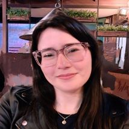

Sobre Mim
Oi! Eu sou a Larissa Cavalcante, carioca da gema que escolheu Curitiba como lar há 2 anos.
Sou uma pessoa curiosa e criativa, sempre em busca de novas experiências.
Nos meus momentos livres, me dedico a ilustrar, ler e viajar o mundo, hobbies que refletem minha forma de ver o mundo:
com leveza, movimento e um toque artístico.
Se quiser conhecer mais sobre meus projetos ou trocar ideias, este espaço
está sempre aberto para novas conexões.
Sinta-se à vontade!